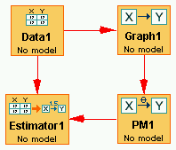
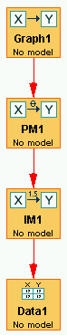
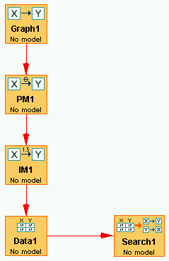
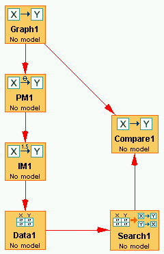
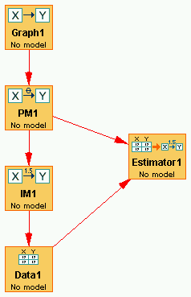
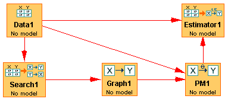
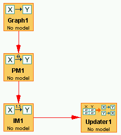

Using Templates |
In using Tetrad you will put together a sequence of boxes connected by flowchart arrows. (See How to Build a Session.) Some sequences are so commonly used, that Tetrad will insert the entire sequence for you--boxes and arrows--in the workbench all at once.
Templates are added to the active session using the Templates menu in the main workspace. The Templates menu looks like this:
An image of each template along with a short description of it follows.

This template can be used if you simply want to load in a data set and do a search on it. The data set can be either continuous or discrete; the options for search algorithms will depend on which type of data set you load.

This template is useful if you want to estimate a Bayes instantiatec model (Bayes IM) from a given data set. A Bayes estimation requires a data set and a Bayes parmaeterized model (Bayes PM) as input. There are two difficulties in getting such an estimation to work:
These conditions can be difficult to ensure when building a Bayes PM from scratch. Adding the edge from Data1 to Graph1 in the template creates an edgeless graph in Graph1 that can then be used to construct a specific DAG to use to build a Bayes PM. Adding the edge from Data1 to PM1 ensures that the categories for each relevant variable in the data set are used when building the Bayes PM. The two arrows out of Data together make it easier to ensure that the Bayes estimation will work.

Like the Bayes version of Estimate from Loaded Data, in order to estimate a SEM IM, a continuous data set and a SEM PM are required that have the same variables. In this case, however, the variables are always continuous, and continuous variables always have the same range (the real numbers), so there is no need to add the edge from Data1 to PM1.

This is a very useful template for simulating continuous or discrete data sets. Continuous data sets can be simulated by constructing a SEM Graph (or DAG), using that to construct a SEM PM, then a SEM IM, and then finally a data set. Discrete data sets can be simulated by constructing a DAG, using that to construct a Bayes PM, then a Bayes IM, and finally a data set. For information on any one of these steps, see the help files for the corresponding box or module.

This template can be used to try out search algorithms on simulated data. Data can be simulated as with the Simulate Data template, and then an appropriate search procedure can be run on this data. Search procedures options are different depending on the type of data simulated.

This template adds to the Search from Simulated Data a Compare node, which counts the number of extra edges and missing edges in the Search graph vis a vis the reference graph in Graph1. This is useful if you want ot get a sense of how well a given search procedure performs on data with particular characteristics.

This template can be used to estimate data with respect to the parametric model that generated it. It is useful if you would like to see how well an estimator does on data with particular characteristics, simulated from an instantiated model with particular characteristics, when you know the parametric model used to generate it.

This template shows how to hook up boxes to estimate data using a model that was generated by a search algorithm on that same data. Usually, the graph coming out of Search1 is an equivalence class graph such as a Pattern or a PAG, and some work might be required to turn this into a DAG or SEM Graph in Graph1 that can be used to build an appropriate parametric model in PM1. The edge from Data1 to PM1 is added in the discrete case to ensure that the variables in PM1 use the same categories as the variables in Data1.

This template shows how to hook up boxes to estimate data using a model that was generated by a search algorithm on that same data. Usually, the graph coming out of Search1 is an equivalence class graph such as a Pattern or a PAG, and some work might be required to turn this into a DAG or SEM Graph in Graph1 that can be used to build an appropriate parametric model in PM1.

This template can be used to do updating operations on a Bayes instantiated model that you've built in IM1.